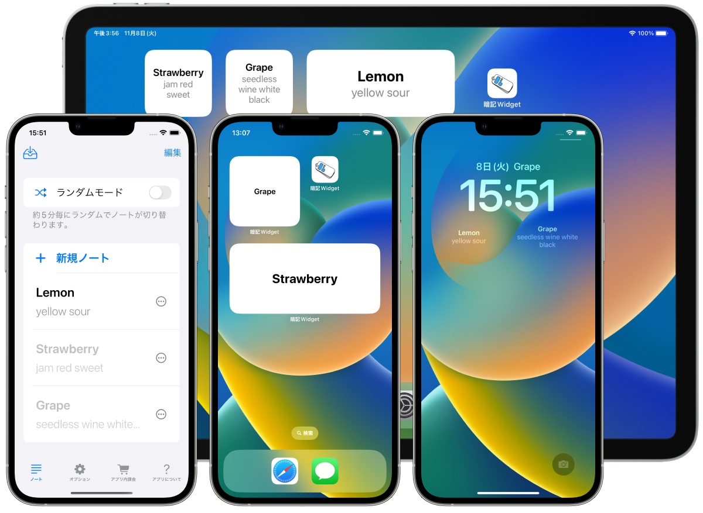
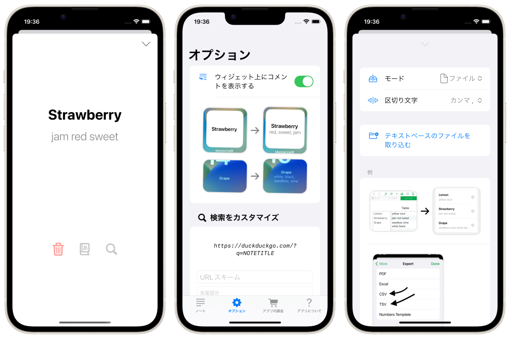

MemorizeWidget
Turn your iPhone/iPad home screen or lock screen into a memorandum book!



Overview
Display your memorandum book on your home screen or lock screen using the widget function. This is an application for iPhone and iPad.
- Two modes: "stand-alone mode" and "random mode.
- In "Random Mode," the notes displayed change every 5 minutes
- Lock screen widget support (iOS16 only)
- Memorandum data can be imported from text or files (csv, tsv, txt, etc.)
- Linkage with OS built-in dictionary
- Customizable search function

Optional
- Display "comment" as well as "title" of note on widget (only for home screen widget/lock screen rectangle widget)
Recommended for the latest iPhone 14 Pro model!
With the iPhone 14 Pro with Always On Display, you can check your notebook without touching your iPhone!

Quote: https://www.apple.com/jp/iphone-14-pro/
Specifications
Price
Free of charge
In-app purchase
Hide ads (160 yen)
Platform
- iOS 15.6 or later
- iPadOS 15.6 or later
Supported Languages